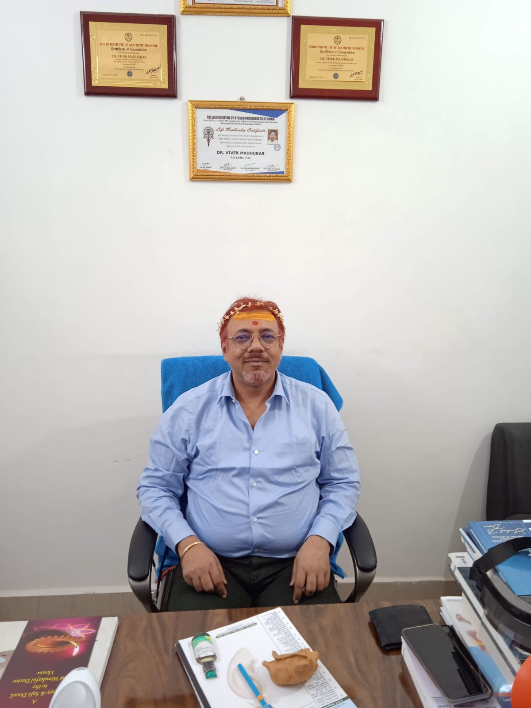

Dr. Vivek Madhukar, M.S. (ENT), is the leading ENT doctor in Deoghar, Jharkhand. He treats hearing loss, sinus problems, throat conditions, thyroid disorders, allergies, vertigo, tinnitus, and snoring — with diagnostic audiometry and endoscopy done in-house at Krishna ENT Clinic, Barmasia.

Dr. Vivek Madhukar has been practising ENT medicine in Deoghar since 2009, making him one of the most experienced ENT specialists in the region. He treats everything from routine ear infections, hearing loss, and sinus trouble to complex conditions like thyroid and salivary gland disorders, vertigo, tinnitus, and snoring.
Krishna ENT Clinic runs its own audiometry and endoscopy equipment, so most diagnoses are completed in a single visit — no need to go elsewhere for tests. Whether you need an ear doctor, nose doctor, throat specialist, or allergy treatment, Dr. Madhukar provides comprehensive care under one roof.
Alongside ENT care, Dr. Madhukar holds postgraduate qualifications in clinical cosmetology and trichology, and consults on hair transplant and facial cosmetic procedures — a combination rare for any single clinic in Deoghar and surrounding areas.
The practice is built around straightforward, unhurried consultations: a clear explanation of what's wrong, what the options are, and what happens next. Patients from Deoghar, Dumka, Godda, Jamtara, and across Santhal Pargana trust Dr. Madhukar for their ENT needs.
Full ENT surgical and diagnostic services with in-house audiometry and endoscopy, plus cosmetology and hair restoration consultations. The best ENT treatment facility in Deoghar.
Tonsillectomy, adenoidectomy, sinus surgery, septoplasty, ear surgery (myringoplasty, mastoidectomy), and other routine and advanced ENT procedures by Deoghar's most experienced ENT surgeon.
In-clinic nasal and throat endoscopy for accurate, same-visit diagnosis of sinusitis, nasal polyps, vocal cord problems, and throat disorders.
Pure-tone hearing tests, speech audiometry, and hearing aid guidance for hearing loss at any age. Best hearing test facility in Deoghar.
Identifying and managing allergic rhinitis, dust allergy, seasonal allergies, and related ENT conditions. Comprehensive allergy care in Deoghar.
Expert diagnosis and surgical treatment of thyroid nodules, goitre, and salivary gland disorders by a trained ENT surgeon.
Hair transplant consultations, facial cosmetic procedures, and hair loss treatment — backed by postgraduate training in cosmetology and trichology. Only clinic in Deoghar offering this alongside ENT care.
Dr. Vivek Madhukar is widely regarded as the best ENT doctor in Deoghar with over 17 years of experience. He holds an M.S. (ENT) from Rajendra Institute of Medical Sciences and practices at Krishna ENT Clinic, Barmasia, Deoghar. He is a member of the Association of Otolaryngologists of India (AOI) and the Indian Medical Association (IMA).
Dr. Madhukar treats all ear, nose, and throat conditions including ear infections, hearing loss, tinnitus (ringing in ears), vertigo (dizziness), sinus problems, nasal polyps, tonsil problems, throat infections, voice disorders, snoring, sleep apnea, thyroid disorders, salivary gland problems, and allergies. He also offers hair transplant and cosmetology services.
Krishna ENT Clinic is located in Barmasia, Deoghar, Jharkhand — 814112. It is easily accessible from all parts of Deoghar city. For directions, you can search "Krishna ENT Clinic Deoghar" on Google Maps.
The clinic is open all days including Sundays from 10:00 AM to 2:00 PM. No app or portal is needed — simply call 6201321080 or message on WhatsApp to book an appointment.
Yes, Krishna ENT Clinic has in-house audiometry equipment for pure-tone hearing tests and speech audiometry. Most diagnoses are completed in a single visit without needing to go elsewhere.
For urgent ENT concerns like sudden hearing loss, severe ear pain, foreign body in ear/nose/throat, or nosebleeds, call the clinic directly at 6201321080. Dr. Madhukar attends to emergency cases promptly.
| MONDAY – SATURDAY | 10:00 AM – 2:00 PM* |
| SUNDAY | 10:00 AM – 2:00 PM* |
| EVENING HOURS | [Add evening timing, if any] |
For appointments, reports, or urgent ear, nose & throat concerns, call or message the clinic — no app or portal needed. Dr. Vivek Madhukar personally consults every patient.